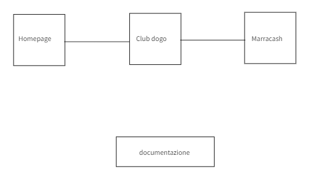
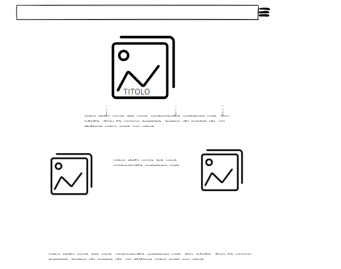
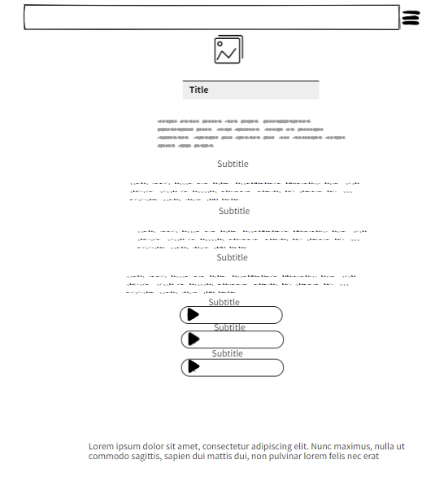
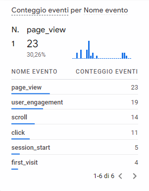

ABSTRACT
Ho creato questo sito per condividere con tutti i visitatori la mia passione per il rap italiano dei primi anni 2000, nata quando ero alle scuole medie. Il sito si rivolge a tutti coloro che hanno la mia stessa passione e che vogliono scoprire un genere un po' dimenticato, sorpassato da nuovi generi come la trap.
PROJET MANAGEMENT PLAN
Benchmarking
Obiettivi
L'obiettivo principale del sito è riportare in auge i rapper old school italiani, come i Club Dogo, Mondo Marcio o ricordare com'erano i rapper prima del loro grande successo, come Marracash.
Target utente
Il target a cui mi rivolgo è piuttosto ampio, in una fascia di età compresa tra i 6 e 40 anni. L' argomento può interessare agli over 25 cresciuti ascoltando questa musica, come agli under 25, che non conoscono questi rapper o che hanno ascoltato solo i loro brani più nuovi, di genere diverso, più tendente alla trap, molto di moda in questi anni.
Competitor
I competitor principali che ho analizzato sono "Hiphopitaly.com" e "lacasadelrap.com".Nel primo caso ho riscontrato una scelta di colori simili, sui toni del rosso, che richiamano i colori usati negli album dei primi anni 2000, mentre il secondo utilizza colori più elettrici, più moderni, come il viola elettrico e colori fluo. Questi due siti sono sicuramente più completi e sviluppati del mio, essendo online già da diverso tempo. Il mio sito vuole essere, però più snello e più concentrato sui singoli artisti e su ciò che preferisco personalmente.
Struttura e Layout
Architettura del sito
Struttura del sito

Home

Pagine artisti

Look and Feel
Ho scelto colori come il rosso e le sue sfumature, bianco e nero, che richiamano gli album dei rapper di cui scrivo. I font sono stati scelti per richiamre lo stile street e per facilitare la lettura. Ho impostato le pagine centrali, cosicché l'occhio del viitatore non debba scorrere da una parte all'arte della pagina, ma scrolla solo dall'alto verso il basso.
Linguaggio e strumenti
Linguaggio Web
- HTML
- CSS
Strumenti
- Bootstrap
- W3school
- Google Font
- CDN fonts
- Moqups (Wireframe)
- Github (Pubblicazione)
COMMUNICATION STRATEGY
Background
Obiettivi Comunicativi
Per pubblicizzare il mio sito ho utilizzato instagram, che è il social più utilizzato dal target che mi sono prefissata.
Ho cercato anche di pubblicizzarmi attraverso il passaparola, parlando con amici con la mia stessa passione.
Messaggio
Vorrei che il mio sito facesse riavvicinare le persone a un genere ormai scomparso. Vorrei che anche i più giovani potessero imparare ad ascoltare di più i testi, apprezzando le parole.
Promozione
Ho utilizzato il mio profilo instragram, sia tramite post, che storie, per pubblicizzare il sito. Molti dei miei follower condividono con me la passione per l'Hip Hop e rap, quindi possono essere interessati ad aprire il mio sito. Inoltre all'interno del mio sito ho inserito anche una newsletter attraverso la quale posso fidelizzare i visitatori.
Risultati
Ho raggiunto di buoni risultati pubblicizzando il sito attraverso instagram, dove si può raggiungere in maniera molto rapida in target a cui mi rivolgo. Ho potuto constatarlo usando il tracking di Google Analytics e vedendo il numero di visualizzazione alle mie storie e i like al mio post.
